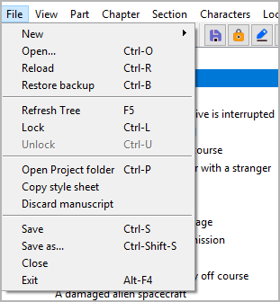
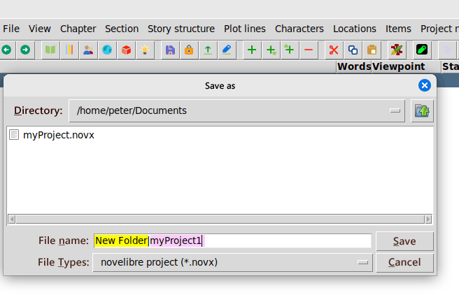

File menu
File operation

New
Create a new novel project
You can create a new project with File > New. This will open a submenu.
Note
The submenu can be extended by plugins to add more file types from which a novelibre project can be created.

- Empty project
This will close the current project and create a blank project.
A file select dialog asks for the new project’s file name (novelibre v1.4+). If you cancel the dialog, you can select the file name later when saving the project.
- Create from ODT…
This will close the current project and open a file dialog asking for an ODT document to create the new projec from.
The newly created project is saved automatically in the same directory as the ODT document, using its file name and the extension .novx.
If a project with the same file name as the ODT document already exists, no new project will be created.
If you select a previously exported document belonging to an existing project, this project will be updated and loaded.
The ODT document can either be a work in progress i.e. a regular novel manuscript with chapter headings and section contents, or an outline, containing the chapter and section structure with titles and descriptions.
Important
- How to set up a work in progress for import
A work in progress has no third level heading.
Heading 1 → New chapter title (beginning a new section).
Heading 2 → New chapter title.
* * *→ Section divider (not needed for the first section in a chapter).All other text is considered section content.
- How to set up an outline for import
An outline has at least one third level heading.
Heading 1 → New chapter title (beginning a new section).
Heading 2 → New chapter title.
Heading 3 → New section title.
All other text is considered to be chapter/section description.
Open…
Open a novel project
You can open an existing project file with File > Open or
Ctrl-O.
Note
When opening a project, the curent project will be closed. You will be asked for saving it, if it has changed.
Reload
Reload the novel project
You can reload the project with File > Reload or Ctrl-R.
Tip
This way you can undo changes made in the current session.
Note
If the project has changed on disk since last opened, you will get a warning.
Restore backup
Restore the latest backup file
You can restore the latest backup file with File > Restore backup
or Ctrl-B. You will get a warning. After restoring the backup,
the backup copy is no longer available.
Hint
You can create a backup copy by saving the project.
Refresh tree
Enforce tree refresh after making changes
You can refresh the tree with File > Refresh tree or F5.
“Normal” sections that have been moved to an “Unused” chapter are made “Unused”.
Parts and chapters are renumbered according to the Auto numbering settings.
The “Trash” chapter is moved to the end of the book, if necessary.
Lock
Protect the project while edited outsides
You can lock the project the
project with File > Lock or Ctrl-L.
The project is saved when modified.
Unlock
Make the project editable
You can unlock the project with File > Unlock or Ctrl-U.
Open Project folder
Launch the file manager
You can launch the file manager with the current project folder with
File > Open Project folder or Ctrl-P. This might be helpful,
if you wish to delete export files, open your project with another
application, and so on. In case you edit the project “outsides”,
consider locking it before.
Copy style sheet
Provide a css style sheet in the project folder
You can copy the style sheet novx.css into the current project folder with File > Copy style sheet. This allows you to view the .novx project file with a web browser.

Edge browser screenshot
Hint
Depending on your web browser and your operating system, the
content type resp. MIME type of .novx files must be registered as
“text/xml”. Under Windows, yo can do this by running the
<home>\.novelibre\add_novelibre.reg script.
Discard manuscript
Discard the current manuscript by renaming it
You can add the .bak extension to the current manuscript with File > Discard manuscript. This may help to avoid confusion about changes made with novelibre and OpenOffice/LibreOffice.
Save
Save the project
You can save the project with File > Save or Ctrl-S.
Note
If the project has changed on disk since last opened, you will get a warning.
Save as…
Save the project with another file name/at another place
You can save the project with another file name/at another place with
File > Save as… or Ctrl-Shift-S. Then a file select dialog
opens.
Note
Your current project remains as saved the last time. Changes since then apply to the new project.
Close
Close the novel project
You can close the project without exiting the program with File > Close. When closing the project, you will be asked for saving the project, if it has changed.
Note
If you open another project, the current project is automatically closed.
Quit/Exit
Exit the program
Under Windows you can exit with File > Exit or
Alt-F4.Otherwise you can exit with File > Quit or
Ctrl-Q.
Note
When exiting the program, you will be asked for saving the project, if it has changed.